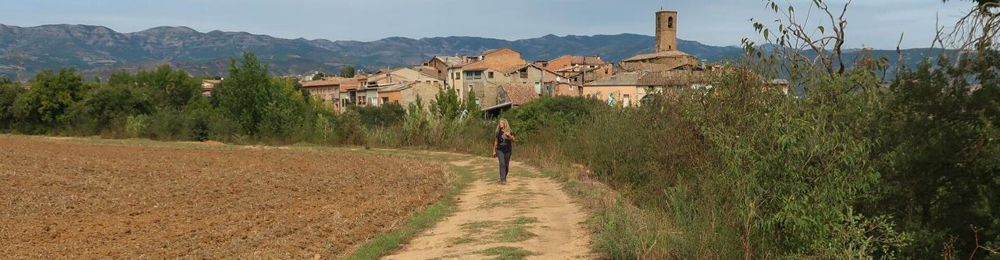

Ruta · Tremp
Aquesta ruta és una agradable passejada ideal per fer en família. Caminarem entre boscos humits, d’ambient fresc i ombrívol al voltant del petit nucli de Palau de Noguera. Encaixats dins la…